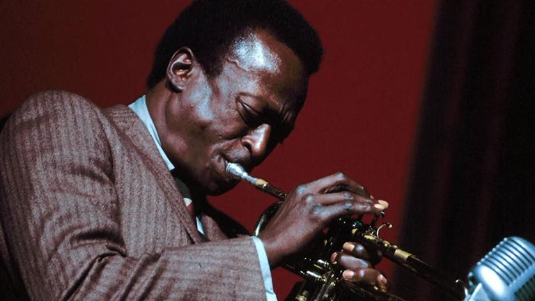

Curriculum Vitae

Miles Davis
Datos Personales
- Nombre: Miles Dewey Davis III. Conocido como "Miles Davis"
- Nacimiento: Alton, Illinois, el 25 de mayo de 1926
- Profesión: Compositor y trompetista de Jazz.
Resumen
Miles Davis, junto con artistas como Louis Armstrong, Duke Ellington, es
una de las figuras más relevantes, innovadoras e influyentes de la
historia del jazz, Charlie Parker o John Coltrane. La carrera de Davis,
que abarca cincuenta años, recorre la historia del jazz a lo largo de toda
la segunda mitad del siglo XX, caracterizándose por su constante evolución
y búsqueda de nuevos caminos artísticos: Davis con igual fuerza del bebop
y del cool, como del hardbop y de la vanguardia jazzística, sobre todo en
su vertiente modal y de fusión con el rock.
El sonido de su trompeta es característico por su uso de la sordina de
acero Harmon, que le proporcionaba un toque más personal e íntimo; el
sonido es suave y melódico, a base de notas cortas,tendente al lirismo y a
la introspección.
Habilidades
- Interprete Trompetista
- Composición Musical
- Producción Musical
Participaciones
-
Integró a los 17 años la "Eddie Randle's Blue Devils", una banda de
música de San Luis.
-
Tras graduarse, trabaja con Charlie Parker en sus presentaciones en
Clubes por toda USA.
- Automatización y Control Industrial, Universidad Andrés Bello.
Web Oficial
Discografía
- 1951: The New Sounds
- 1952: Young Man With A Horn
- 1953: Blue Period
- 1953: The Compositions Of Al Cohn
- 1953: Miles Davis Volume 2
- 1954: Miles Davis Volume 3
- 1954: Miles Davis Quartet
- 1954: Miles Davis All-Star Sextet
- 1954: Miles Davis Quintet
- 1954: Miles Davis with Sonny Rollins
- 1955: Miles Davis All Stars, Vol 1
- 1955: Miles Davis All Stars, Vol 2
- 1955: Musings
- 1955: Blue Moods
- 1956: Dig
- 1956: Miles: The New Miles Davis Quintet
- 1956: Miles Davis and Horns
- 1956: Quintet / Sextet
- 1956: Collectors' Items
- 1956: Blue Haze
- 1957: Walkin
- 1957: Cookin
- 1957: Bags Groove
- 1958: Relaxin
- 1959: Miles Davis And The Modern Jazz Giants
- 1959: Workin
- 1961: Steamin
Recopilaciones
- 1957: Amsterdam Concert
- 1960: Copenhagen 1960
- 1960: Free Trade Hall, Vol. 1
- 1960: Free Trade Hall, Vol. 2
- 1961: Miles Davis at Carnegie Hall
-
1961: Live Miles: More Music from the Legendary Carnegie Hall Concert
- 1964: Miles Davis in Europe
- 1965: Miles in Berlin
- 1965: My Funny Valentine
- 1969: Miles in Tokyo
- 1970: Miles Davis at Fillmore: Live at the Fillmore East
- 1973: Miles Davis in Concert
- 1973: Jazz at the Plaza
- 1973: Black Beauty: Live at the Fillmore West
- 1975: Agharta
- 1976: Pangaea
- 1977: In Paris Festival International de Jazz 1949
- 1977: Dark Magus
- 1982: We Want Miles
- 1987: that's what happened, live in germany
- 1988: Miles & Coltrane
-
1992: Miles Davis Live in Stockholm 1960 Complete with John Coltrane and
Sonny Stitt
- 1993: Live in Zurich 1960
- 1993: 1969 Miles Festiva De Juan Pins
- 1993: Miles! Miles! Miles!
- 1993: Miles & Quincy Live at Montreux
- 1994: Live at Newport 1958 & 1963
- 1995: Live at the Plugged Nickel
- 1996: Live Around the World
- 2000: Chasin' the Bird
- 2001: At Newport 1958
-
2001: Live at the Fillmore East, March 7, 1970: It's About That Time
- 2002: The Complete Miles Davis at Montreux
- 2003: In Person Friday and Saturday Nights at the Blackhawk
- 2004: Birdland 1951
- 2007: Live at the 1963 Monterey Jazz Festival
- 2011: Bitches Brew Live
Ir al Portafolio